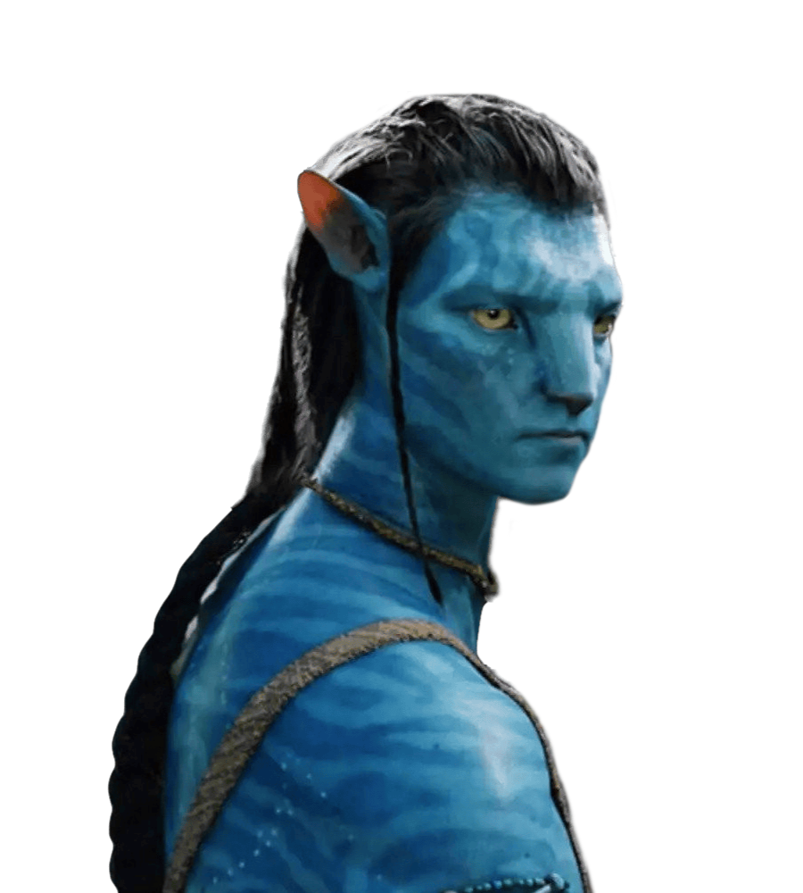

Computer Science and Engineering Student

Hello! My name is SeoYong Jung and I am a Computer Science and Engineering student at Seoul National University. I am interested in software development, artificial intelligence, computer systems, and problem solving.
Developed a Java-based application using object-oriented design principles.
Participated in algorithm practice, code reviews, and collaborative software projects.
Seoul National University
B.S. in Computer Science and Engineering
Email: seoyong03@snu.ac.kr
GitHub: github.com/seoyongj
Tool: ChatGPT
Prompt: Build a static personal website with About Me, Projects, Resume, Contact, and Courses sections.